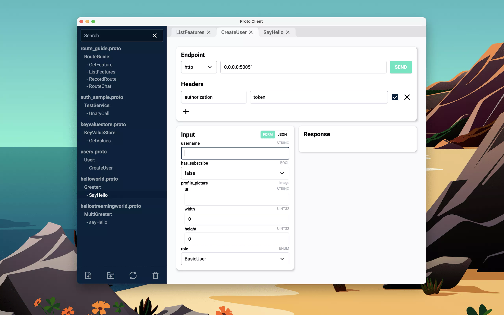

Solutions
How it works
Prices
Read proto files and send gRPC requests in the easiest way.
Load your Protobuf
API (.proto files) and ProtoClient will generate all related
services and methods.
Then choose a method and fill up the generated form or a raw JSON to send and test your API .
Features:
- Load API from proto files
- Send gRPC requests
- Save environment: endpoint + port
- Add headers
- Support https and http protocol
- Input: fill form or write JSON
- Search method

Then choose a method and fill up the generated form or a raw JSON to send and test your API .
Features:
- Load API from proto files
- Send gRPC requests
- Save environment: endpoint + port
- Add headers
- Support https and http protocol
- Input: fill form or write JSON
- Search method